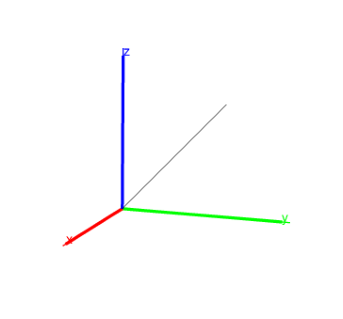

14.5.3 Segments in space: segment
See Section 13.7.3 for segments in the plane.
The segment command draws line segments.
-
segment takes two arguments:
P,Q, two points (which can also be given as a list).
- segment(P,Q) returns the corresponding line
segment and draws it.
Example
Input:
segment(point(0,0,0),point(1,1,1))
Output:
